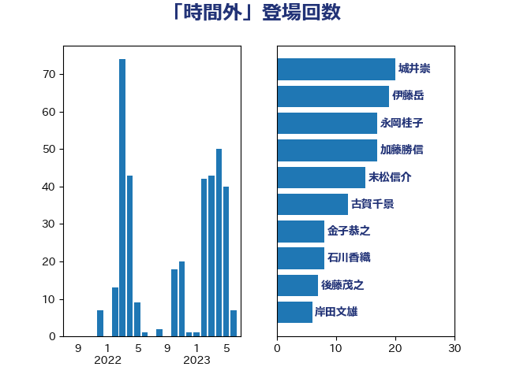

単語「時間外」

| 城井崇 | 立憲民主党 | 20 回 |
| 伊藤岳 | 日本共産党 | 19 回 |
| 永岡桂子 | 自由民主党 | 17 回 |
| 加藤勝信 | 自由民主党 | 17 回 |
| 末松信介 | 自由民主党 | 15 回 |
| 古賀千景 | 立憲民主党 | 12 回 |
| 金子恭之 | 自由民主党 | 8 回 |
| 石川香織 | 立憲民主党 | 8 回 |
| 後藤茂之 | 自由民主党 | 7 回 |
| 岸田文雄 | 自由民主党 | 6 回 |
| 宮本岳志 | 日本共産党 | 6 回 |
| 倉林明子 | 日本共産党 | 6 回 |
| 荒井優 | 立憲民主党 | 5 回 |
| 斉藤鉄夫 | 公明党 | 5 回 |
| 川合孝典 | 国民民主党 | 5 回 |
| 吉良よし子 | 日本共産党 | 5 回 |
| 田畑裕明 | 自由民主党 | 4 回 |
| 松本剛明 | 自由民主党 | 4 回 |
| 本村伸子 | 日本共産党 | 4 回 |
| 木原稔 | 自由民主党 | 4 回 |
| 野間健 | 立憲民主党 | 3 回 |
| 深澤陽一 | 自由民主党 | 3 回 |
| 永井学 | 自由民主党 | 3 回 |
| 斎藤嘉隆 | 立憲民主党 | 3 回 |
| 佐藤英道 | 公明党 | 3 回 |
| 伴野豊 | 立憲民主党 | 3 回 |
| 伊佐進一 | 公明党 | 3 回 |
| 三浦信祐 | 公明党 | 3 回 |
| 鬼木誠 | 立憲民主党 | 2 回 |
| 高橋千鶴子 | 日本共産党 | 2 回 |
| 長浜博行 | 無所属 | 2 回 |
| 野田聖子 | 自由民主党 | 2 回 |
| 道下大樹 | 立憲民主党 | 2 回 |
| 輿水恵一 | 公明党 | 2 回 |
| 萩生田光一 | 自由民主党 | 2 回 |
| 笠浩史 | 無所属 | 2 回 |
| 福島伸享 | 無所属 | 2 回 |
| 田村智子 | 日本共産党 | 2 回 |
| 田中健 | 国民民主党 | 2 回 |
| 浜口誠 | 国民民主党 | 2 回 |
| 東国幹 | 自由民主党 | 2 回 |
| 斎藤アレックス | 国民民主党 | 2 回 |
| 打越さく良 | 立憲民主党 | 2 回 |
| 勝部賢志 | 立憲民主党 | 2 回 |
| 伊藤渉 | 公明党 | 2 回 |
| 仁木博文 | 無所属 | 2 回 |
| 井上哲士 | 日本共産党 | 2 回 |
| おおつき紅葉 | 立憲民主党 | 2 回 |
| 鳩山二郎 | 自由民主党 | 1 回 |
| 音喜多駿 | 日本維新の会 | 1 回 |
| 長峯誠 | 自由民主党 | 1 回 |
| 鈴木俊一 | 自由民主党 | 1 回 |
| 遠藤良太 | 日本維新の会 | 1 回 |
| 赤羽一嘉 | 公明党 | 1 回 |
| 西村智奈美 | 立憲民主党 | 1 回 |
| 西村康稔 | 自由民主党 | 1 回 |
| 西岡秀子 | 国民民主党 | 1 回 |
| 蓮舫 | 立憲民主党 | 1 回 |
| 菊田真紀子 | 立憲民主党 | 1 回 |
| 芳賀道也 | 国民民主党 | 1 回 |
| 舩後靖彦 | れいわ新選組 | 1 回 |
| 自見はなこ | 自由民主党 | 1 回 |
| 緒方林太郎 | 無所属 | 1 回 |
| 竹詰仁 | 国民民主党 | 1 回 |
| 秋野公造 | 公明党 | 1 回 |
| 石井苗子 | 日本維新の会 | 1 回 |
| 津島淳 | 自由民主党 | 1 回 |
| 泉健太 | 立憲民主党 | 1 回 |
| 柴愼一 | 立憲民主党 | 1 回 |
| 杉尾秀哉 | 立憲民主党 | 1 回 |
| 早稲田ゆき | 立憲民主党 | 1 回 |
| 平林晃 | 公明党 | 1 回 |
| 岸真紀子 | 立憲民主党 | 1 回 |
| 山添拓 | 日本共産党 | 1 回 |
| 小野泰輔 | 日本維新の会 | 1 回 |
| 小沢雅仁 | 立憲民主党 | 1 回 |
| 宮本徹 | 日本共産党 | 1 回 |
| 安江伸夫 | 公明党 | 1 回 |
| 守島正 | 日本維新の会 | 1 回 |
| 大島敦 | 立憲民主党 | 1 回 |
| 大家敏志 | 自由民主党 | 1 回 |
| 和田政宗 | 自由民主党 | 1 回 |
| 吉田統彦 | 立憲民主党 | 1 回 |
| 佐藤信秋 | 自由民主党 | 1 回 |
| 伊藤孝恵 | 国民民主党 | 1 回 |
| 中村裕之 | 自由民主党 | 1 回 |
| 中川郁子 | 自由民主党 | 1 回 |
| 上野賢一郎 | 自由民主党 | 1 回 |